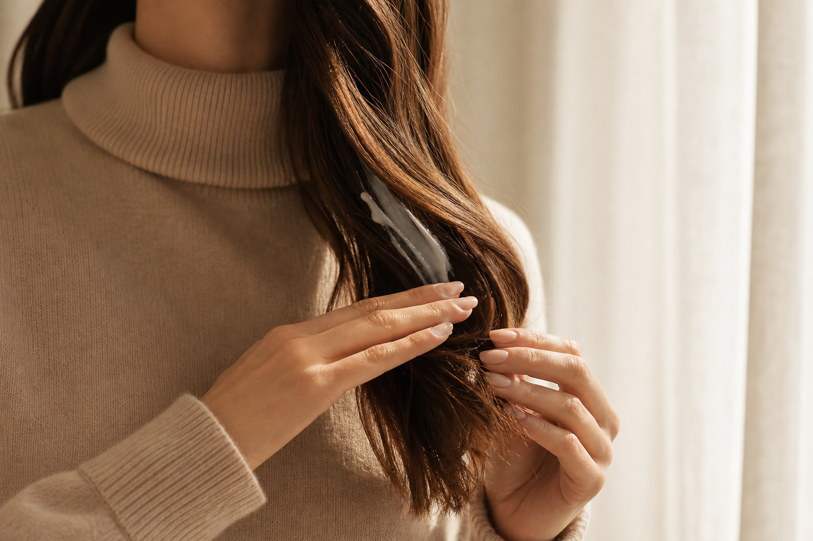
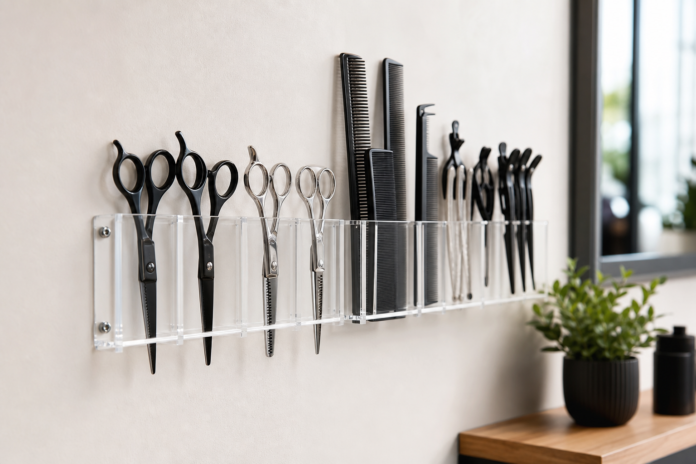

Before you sit down
I ask for inspiration stills—not only Pinterest hair boards, but wardrobe necklines and how much heat you actually use at home. That keeps the shape honest after you leave.
Solo practice · one chair
I built Auburn Atelier as a one-chair salon so nothing gets lost between visits—your reference images, your scalp history, and the way you actually wear your hair day to day.
Open the calendar
I ask for inspiration stills—not only Pinterest hair boards, but wardrobe necklines and how much heat you actually use at home. That keeps the shape honest after you leave.
Quiet room, one mirror conversation at a time. No double-booking, no hand-offs to a junior—just focused time on your hair from the first section to the final mist.
You leave with reset instructions written for you—not a generic printout. The name on your booking is the name on every note, formula, and follow-up.
Craft & calibration
Sectioning stays mapped on paper, bowls are labeled with timestamps, and brushes are swapped before they fatigue your ends. The goal is predictability—so your color looks right in the salon, in daylight, and in every photo after.

What guests say once the color has lived through a few washes.
“Grow-out stayed beautiful for eight weeks. The care notes she emailed were clearer than any I’ve had.”— Color guest
“My wedding morning ran exactly on time—hair done, calm room, zero stress before the dress.”— Bridal guest
“She said no to a third process when my hair’s health mattered more than the inspo photo. Rare.”— Regular color guest
Advanced placement and corrective color study. Precision cutting, lived-in color, and event styling—from everyday shapes to wedding mornings.
Trial sessions before the big day, on-location styling for bridal parties, and a morning-of timeline so everyone is ready with time to spare.
Refillable cleansing backbar where possible, foil recycling through your city program, and realistic timing so we don’t over-process “just to finish faster.”